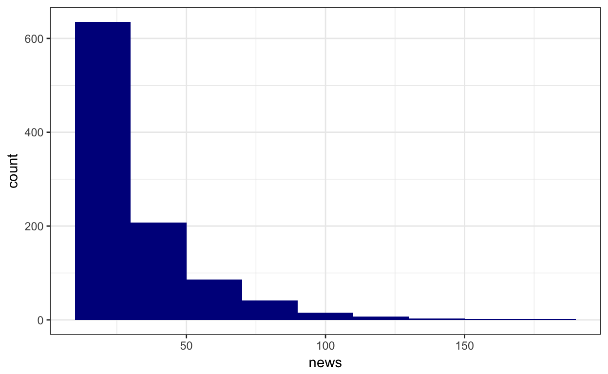
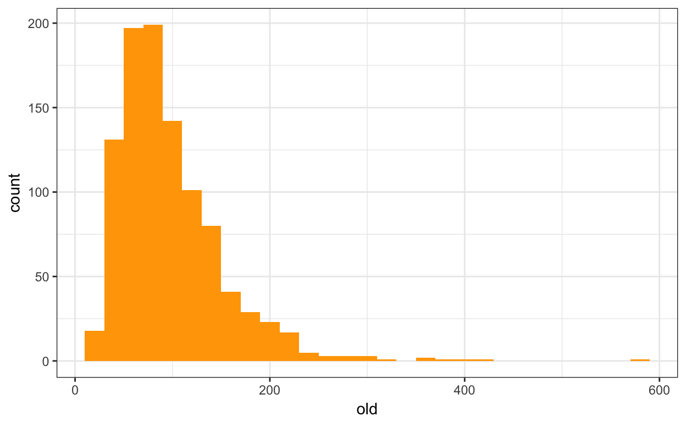
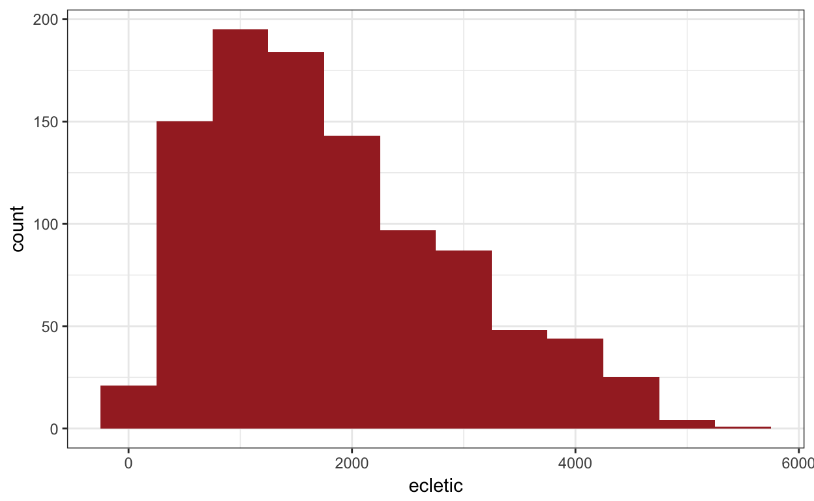
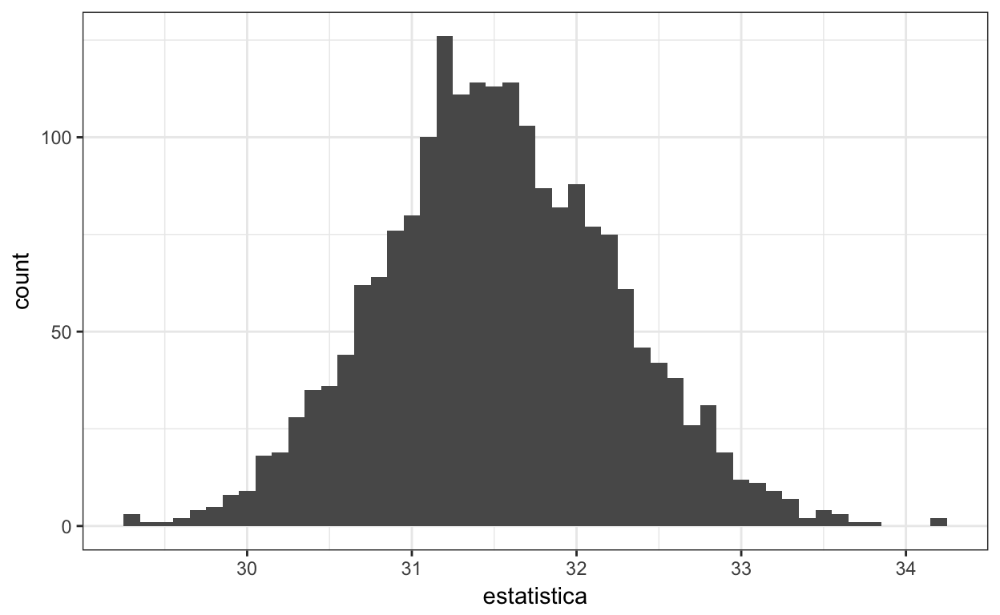

Intervalos de confiança
A ideia
Utilizaremos como exemplo o dataset do experimento com usuários do Lastfm sobre o qual conversamos em sala.
## Observations: 999
## Variables: 5
## $ user <chr> "slesarjuk", "SheenaFee", "Schimpansky", "Tomolo", "...
## $ ecletic <dbl> 1133.8610, 4095.1197, 2750.0722, 3878.3820, 504.0433...
## $ media_pop <dbl> 5.706154, 5.093055, 5.359102, 5.694531, 5.485194, 5....
## $ news <int> 16, 22, 34, 19, 29, 36, 15, 13, 12, 11, 26, 11, 32, ...
## $ old <int> 82, 49, 110, 101, 63, 75, 97, 58, 48, 106, 112, 43, ...
Se quisermos estimar onde está a média do número de artistas novos escutados pelos participantes do experimento, nosso código seria algo desse tipo:
funcao_bootstrap <- function(dado, indices){
d = dado %>%
slice(indices) %>%
pull(news)
return(mean(d))
}
bootstraps <- boot(data = amostra,
statistic = funcao_bootstrap, # <- referência para a função
R = 2000)
glimpse(bootstraps$t)## num [1:2000, 1] 31.8 31 31.6 32.2 31.1 ...tibble(estatistica = as.double(bootstraps$t)) %>%
ggplot(aes(x = estatistica)) +
geom_histogram(binwidth = .1)
boot.ci(bootstraps, conf = 0.95, type = "basic")## BOOTSTRAP CONFIDENCE INTERVAL CALCULATIONS
## Based on 2000 bootstrap replicates
##
## CALL :
## boot.ci(boot.out = bootstraps, conf = 0.95, type = "basic")
##
## Intervals :
## Level Basic
## 95% (30.10, 32.92 )
## Calculations and Intervals on Original ScaleCalcule o IC da mediana dessa variável. Dá par afirmarmos se valor da média é superior ou inferior ao da mediana (na população)? Isso era esperado?
Diferenças via ICs
Ok, agora suponha que queiramos calcular se o número de artistas novos escutados pelos participantes de nosso experimento é maior ou menor que o número de artistas do conjunto que usamos para determinar o que ele já conhecia. Calcule os ICs para ambos e proponha uma resposta.
E conseguimos estimar o tamanho da diferença?
ICs da diferença
Para que possamos estimar o IC da diferença, precisamos definir a estatística diferença entre novos e antigos e aí estimar o IC dela.
Podemos afirmar com o nível de confiança que você escolheu que ela é diferente de zero?
amostra = amostra %>%
mutate(diferenca = news/2 - old/4)Diferenças não pareadas
Pelo método anterior, era possível calcular a diferença entre news e old para cada participante do experimento. Isso se chama diferença pareada. Se quisermos calcular a diferença entre (a) a quantidade de novos artistas escutados por um subgrupo dos participantes que gosta muito de artistas populares pop e (b) a quantidade de novos artistas escutados por um subgrupo dos participantes que gosta mais de artistas obscuros, eles subgrupos serão de participantes diferentes. Por isso, não poderemos fazer uma diferença pareada.
Reescreva a função funcao_bootstrap para que ela faça a diferença das médias em cada boostrap e calcule abaixo o IC da diferença não-pareada. Podemos afirmar com 95% de confiança que ela é diferente de zero? O que isso significa?
amostra = amostra %>%
filter(media_pop > 5.74 | media_pop < 5.2) %>% # <- deixa apenas os extremos
mutate(gosta_de_pop = media_pop > 5.7)